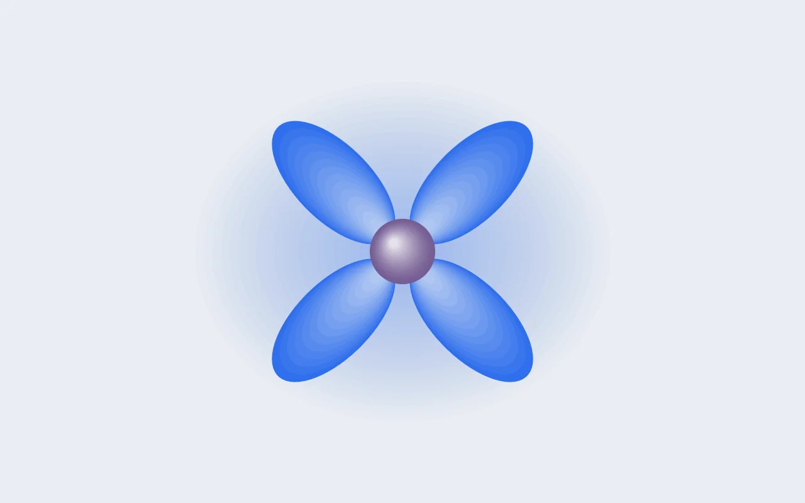

DFT 실습 [4] — GGA+U 첫 계산: U를 걸자 Mn 자기모멘트가 커졌다
α-NaMnO₂(MnO₂ 층 사이에 Na가 들어 있는 배터리 양극 물질)를 표준 DFT(GGA)로 계산하면, Mn의 d 전자가 실제보다 넓게 퍼지는 오차가 생깁니다(이론 [3]). 이를 보정하는 방법이 d 오비탈에 벌점 U를 거는 GGA+U입니다. 이번에는 같은 구조에 U = 3.9 eV를 걸어, 이론 [3]에 적은 예측("U를 걸면 d 전자가 Mn 원자 쪽에 더 모인다")이 계산에서도 나오는지 확인했습니다. 실습 [3](8월 25일) 이후 한 달 만의 계산이었는데, 다시 시작하는 데 20분이 걸렸습니다. 랩노트와 이 블로그의 지난 글 덕분입니다.

이 글에 나오는 말
- GGA와 GGA+U: GGA는 표준 DFT에서 쓰는 근사 범함수 계열입니다(여기서는 PBE). GGA+U는 여기에 d 오비탈의 점유가 0이나 1에서 벗어날수록 에너지를 높이는 벌점 항을 더한 것이고, 그 세기가 U입니다.
- 자기상호작용 오차(SIE): 근사 범함수에서 전자가 자기 자신과 반발하는 가짜 항이 남는 오차입니다. 좁은 곳에 모인 d 전자일수록 커서, GGA는 d 전자를 실제보다 넓게 퍼뜨립니다.
- 국재화: 전자가 한 원자 근처에 모여 있는 것입니다.
- 이온별 자기모멘트와 산소 분극: 원자마다 둘레의 구 안에서 잰 스핀 밀도입니다. Mn의 값으로 가수를 읽고(이론 [2]), 산소에 생긴 작은 값을 산소 분극이라고 부릅니다.
0. 한 달 만의 복귀: 기록으로 다시 시작하기
한 달을 쉬고 나면 가장 먼저 막히는 것이 "어디까지 했더라"입니다. 이번에 확인한 것은, 다시 시작하는 데 필요한 것이 기억이 아니라 기록이라는 점입니다. 랩노트의 마지막 줄(ENCUT=520 / 6×6×2 고정)과 실습 [2], 이론 [3]을 다시 읽는 것으로 상태가 복원됐습니다. 이론 [3]의 마지막 문단에는 다음 할 일까지 적혀 있었습니다. "같은 NaMnO₂에 U=3.9를 걸었을 때와 안 걸었을 때의 비교."
1. 실험 설계: 바꾸는 것은 범함수 하나
수렴 테스트와 같은 방식으로 변인을 통제합니다. 구조, ENCUT, k-mesh를 전부 고정한 채 범함수 쪽만 움직입니다. GGA 기준값은 실습 [1]의 계산이 이미 있으니 재활용하고, 새로 돌릴 것은 +U 쪽 하나뿐입니다.
mkdir -p work/02_functional # 새 실험 종류 = 새 번호 폴더
cp -r work/01_NaMnO2_conv/test01 work/02_functional/u39
cd work/02_functional/u39
rm -f WAVECAR CHGCAR CHG OUTCAR OSZICAR vasp.log CONTCAR2. INCAR에 더한 여섯 줄
LDAU = .TRUE.
LDAUTYPE = 2
LDAUL = -1 2 -1
LDAUU = 0 3.9 0
LDAUJ = 0 0 0
LMAXMIX = 4- LDAUTYPE = 2. Dudarev 방식. Paper [1]에서 살펴본 식 (U_eff/2)·Σn(1−n)입니다. U와 J의 차이만 들어가는 형식이라 LDAUJ는 0으로 두고 LDAUU에 U_eff를 직접 씁니다.
- LDAUL = -1 2 -1. 원소별로 어느 오비탈에 걸 것인가. 순서는 POSCAR의 원소 순서(Na, Mn, O) 그대로이고, Na와 O는 걸지 않고(−1) Mn의 d 오비탈(l=2)에만 겁니다. 논문에서 배운 원칙, U는 한 원자에 모여 있는 d 전자를 위한 보정이고 넓게 퍼진 전자에 걸면 결과가 오히려 나빠진다는 것을 그대로 따른 설정입니다.
- LDAUU = 0 3.9 0. U의 값입니다. Wang, Maxisch, Ceder(2006)가 망간 산화물들의 실험 산화 엔탈피에 피팅해 얻은 값 3.9 eV입니다. 논문 리뷰까지 해놓고 그 숫자를 제 입력 파일에 직접 적는 기분이 묘하게 좋습니다. "남들이 쓰길래"가 아니라 출처를 아는 숫자.
- LMAXMIX = 4. 수렴을 위한 설정입니다. SCF의 밀도 혼합기는 기본 설정으로 d 성분을 충분히 섞지 않는데, +U 계산은 d 오비탈의 점유가 핵심이라 이 값을 올려야 수렴이 안정됩니다. 빼먹으면 +U 계산이 느리게 수렴하거나 진동하는 단골 원인이라고 합니다.
3. 결과: 이온별 자기모멘트 대조
이번 비교의 관측량은 총 에너지가 아니라(이유는 §5) 이온별 국소 자기모멘트입니다. OUTCAR의 magnetization 표에서 Mn 세 개와 O 여섯 개를 읽으면:
| Mn d 모멘트 (μB) | O p 분극 (μB) | 셀 전체 (μB) | |
|---|---|---|---|
| GGA | 3.85 | −0.04 | 12.00 |
| GGA+U (3.9 eV) | 4.35 | −0.25 | 12.00 |
| 변화 | +0.49 | −0.21 | 0 |
4. 해석: 이론 [3]의 예측과 비교
- d 전자가 Mn에 더 모였습니다. SIE는 d 전자를 실제보다 퍼뜨리고, U는 그 오차를 상쇄해 d 전자를 Mn 쪽으로 다시 모은다는 이론 [3]의 내용이 +0.49 μB라는 숫자로 나왔습니다. Paper [1]의 Table II가 산화물 17개에서 보여 준 것과 같은 방향, 같은 크기(+0.3~0.5 μB)입니다.
- 산소의 −0.25. O 여섯 개가 전부 Mn과 반대 방향으로 분극되어 있습니다. Mn의 d 오비탈이 산소 2p 오비탈과 섞이면서(혼성) 생긴 반대 방향 분극이고, 초교환(superexchange) 상호작용에서 나타나는 특징입니다. 이론 [2]에서 셀 전체 모멘트 11.9991이 12보다 조금 작은 이유를 산소 쪽으로 퍼진 모멘트로 설명했는데, +U 계산에서는 그 산소 모멘트가 이온별 표에 뚜렷하게 나타납니다.
- 왜 4.0이 아니라 4.35인가. 형식 이온 그림(d⁴ = 4.0)은 이상화이고, 모멘트를 세는 투영 구 안에 O 2p와 혼성된 성분이 함께 잡히기 때문입니다. Paper [1] §8.1에서 "d 전자라는 것이 유일하게 정의되지 않는다"고 했던 점, 즉 어떤 범위를 원자에 넣어 세느냐에 따라 값이 달라진다는 점이 여기서 드러납니다. 중요한 것은 절대값이 아니라 GGA 대비 방향과 크기이고, 그건 교과서와 일치합니다.
5. 주의: GGA+U 에너지는 GGA 에너지와 비교할 수 없다
+U 계산의 총 에너지는 −62.13 eV로, GGA의 −66.67 eV보다 4.5 eV 높게 나왔습니다. "U를 걸었더니 물질이 불안정해졌다"고 읽으면 틀립니다. U 벌점 항은 에너지의 기준점 자체를 바꾸기 때문에, GGA 에너지와 GGA+U 에너지는 처음부터 같은 기준으로 계산한 값이 아닙니다. 이론 [3]에서 U가 남기는 문제로 적은 "에너지끼리 호환이 안 됨"을 계산으로 확인한 것입니다. 실무 규칙으로 옮기면 이렇습니다. +U 계산끼리 무언가를 비교하려면 비교 대상 전부를 같은 U로 계산해야 하고, 서로 다른 수준의 계산을 한 상평형도에 섞으려면 별도의 보정(Materials Project가 하는 일)이 필요합니다.
이날 배운 것들
- 기록이 있으면 쉬었다가도 바로 이어 갈 수 있다. 한 달 공백 뒤 다시 시작하는 데 20분이 걸린 것은 랩노트와 블로그 덕이다. 미래의 나는 남이다. 남에게 설명하듯 남겨야 한다.
- U의 효과는 에너지가 아니라 전자 구조에서 읽는다. 이온별 모멘트와 산소 분극으로 보고, GGA vs GGA+U 총 에너지 비교는 무의미하다.
- 출처 있는 숫자의 힘. LDAUU의 3.9는 논문 리뷰로 출처를 확인한 값이라, 결과가 나왔을 때 "왜 이 방향인가"까지 설명할 수 있었다.
- LMAXMIX = 4. +U 계산의 수렴을 안정시키는 설정이다.
다음. 범함수 비교의 나머지 절반인 r2SCAN입니다. r2SCAN은 GGA보다 한 단계 높은 근사(meta-GGA, 이론 [1])로, 경험적으로 정한 U 없이 범함수만으로 어디까지 맞는지를 같은 구조에서 확인합니다. GGA / GGA+U / r2SCAN 세 방법의 Mn 모멘트와 격자를 나란히 놓습니다. 이 연구(고엔트로피 Na 층상 산화물)에서 어떤 방법을 쓸지가 걸린 비교라, 이 시리즈에서 처음으로 "답을 모르는 채" 결과를 기다리는 계산이 됩니다.

Seok
연구하면서 개발합니다. 배터리 재료를 원자 단위에서 계산하는 법을 바닥부터 배우는 중입니다. → 글 더 보기